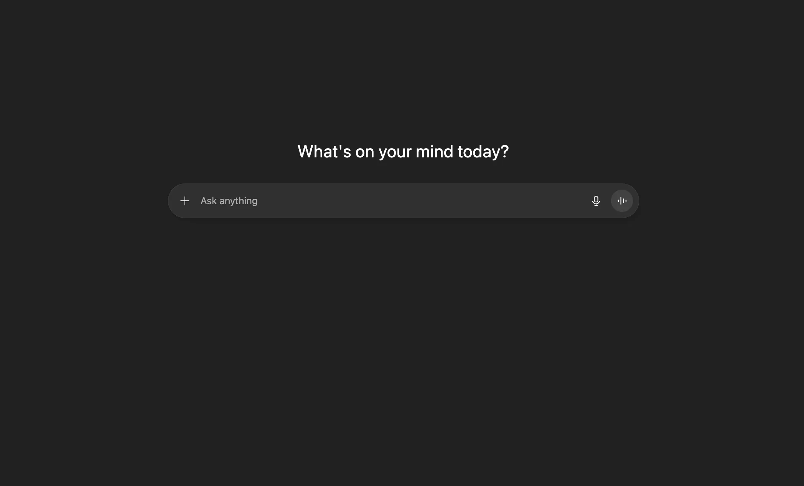

Wavify
AI-Powered Support for 24/7 Customer Engagement
Wavify helps businesses automate customer support using intelligent AI chatbots. Instantly respond to queries, reduce support load, and boost customer satisfaction—round the clock.

Big brands trust us
Big brands got empowered with our AI chatbot support


Why Choose Wavify for Chat Support?
Wavify empowers your business with intelligent AI chatbot support. Deliver instant answers, improve user satisfaction, and reduce manual workload with always-on automation.
1 / 3
Instant 24/7 Responses
Wavify handles customer queries round the clock, ensuring no customer is left waiting.
Context-Aware AI Responses
Wavify understands customer intent and provides intelligent, human-like replies with context.
Seamless Integrations
Integrate with your existing platforms and gain insights through real-time conversation analytics.
Smarter Chat Support for Modern Businesses
Wavify is your AI-powered chatbot support solution designed to boost customer satisfaction, reduce manual workloads, and scale support operations efficiently — all while integrating seamlessly into your existing platforms.
Automated Query Resolution
Wavify instantly resolves repetitive customer queries using AI, freeing up your support team for complex tasks.
Multi-Language Support
Communicate with customers globally through real-time AI translation and localization.
Insightful Conversation Analytics
Track performance, measure satisfaction, and uncover trends with built-in chat analytics and reporting.

AI Chat Support That Delivers Real Results
Wavify is transforming customer support with intelligent automation. See how businesses are achieving better response times, reduced workload, and happier customers.
24/7
Automated Support Availability
40%
Reduction in Ticket Volume
3x
Faster Response Time
95%
Customer Satisfaction Score (CSAT)
150+
Businesses Supported Globally
20+
Languages Understood & Supported
Trusted by forward-thinking businesses.
Wavify helps modern teams automate complex workflows, derive deeper insights, and make smarter decisions—faster.

Priya Shah
Wavify streamlined our operations like never before. Our data reports are now generated in seconds instead of hours.

James Wu
We reduced manual effort by over 60% after switching to Wavify. The automation capabilities are game-changing.

Elena Rodriguez
Wavify is the future of business intelligence. Their AI integrations give us a strategic edge across departments.
Got Questions? We've Got Answers!
Find answers to common questions about how Wavify's AI chatbot can improve your support experience. Need more help? Reach out to our team anytime.
Ready to Upgrade Your Customer Support With AI?
Start using Wavify and let our AI-powered chatbot handle your customer queries 24/7—faster responses, happier users, and fewer support tickets.